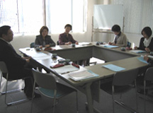

【日 時】
３月10日(火)10:00～11:30
【場 所】
埼玉県生協連・会議室
【出席者】
６人(埼玉消団連、埼玉県生協連、ドゥコープ、生協ネットワーク協議会)
■
議 題
（○は主な意見・質問）
１．
2008年度活動のまとめ(案)について提案し、意見交換しました。

○
｢取り組みのまとめ｣の前段に2008年度に起こった食品事故・事件をまとめて入れておく方が良い。2008年度で言えば汚染米やメラミンについての記述が欲しい。
○
オンブズ会議関連会議の項目で、抜けている会議も委員の方に伺い記載したほうが良い。
２．
2009年度活動方針(案)について提案し、意見交換しました。
○
リスクコミュニケーションの充実強化を記述した方が良い。講演会等も行政や事業者と消費者団体が一緒に取り組めると参加者も増え、広がって良いのではないか。
○
次年度に取り組みたい学習テーマが具体的に記述されていると良い。
○
埼玉県・さいたま市の食肉衛生センターや国・県・市などの食品検査センターの見学も行いたい。
３．
2009年度年間日程(案)を提案し、後日調整し決定することとしました。
４．
報告・資料提供等
埼玉県消費者団体連絡会トップ